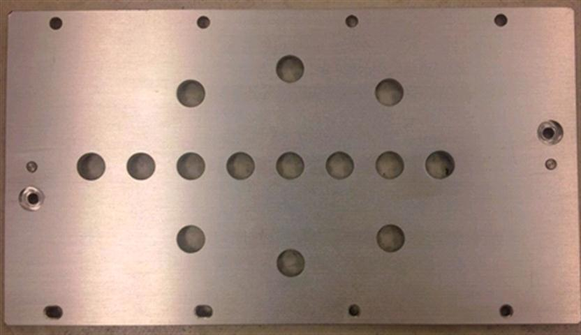
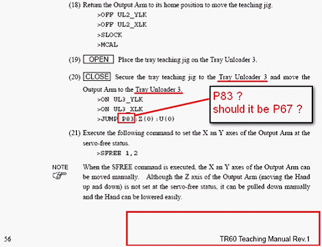

Service History
Subject: TR-60 Output Shuttle teaching jig and First Reference point for Tray Unloader 3
Handler Model: TR-60
Controller: RC520
Date: 23 Mar 2010
Q&A
below is the photo of Output Shuttle teaching jig for TR60.
1) Can you identify, for robot 3, which is the hole use for P80 at output shuttle?(Manual states 5 holes and use the first hole with reference to chamber side)
2) which is the hole use for P81 at output shuttle?

Ans:
1) P80: For 8 holes, use the second hole with reference to chamber side
2) P81: For 8 holes, use the sixth hole with reference to chamber side
3) For robot 3, should the first reference point of Tray Unloader 3 be P67 and not P83?

Ans: P67 is correct.